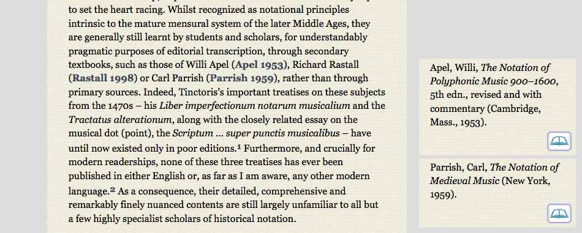

  <div class="content">
  	<div class="contentbox">
      <div class="explanation navigation">
          <div class="explanation-row">
            <div class="cell"></div>
            <div class="cell"><a href="../#">Up (website guide)</a></div>
            <div class="cell"></div>
          </div>
        <div class="explanation-row">
          <div class="cell"><a href="2.html">Back (bibliographic reference pop-ups)</a></div>
          <div class="cell"></div>
          <div class="cell"><a href="../Notes/1.html">Next (notes)</a></div>
        </div>
      </div>
      <h3>Articles and other information pages: Bibliographic references III</h3>
      <p>Bibliographic references stay visible until they are clicked
      or the mouse moves over another reference. To keep the reference
      present so that <a href="3.html">several can be viewed
      together</a>, click on the citation itself. Holding down
      the <i>alt</i> key whilst clicking to close a reference will
      close all reference boxes. Reference boxes are positioned to be
      as close to their citations as possible without overlapping with
      one another.</p>
      <div class="helpshot h950">
        
      </div>
    <!--end .contentbox -->
  	</div>
    <!-- end .content -->
   </div>
